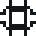
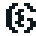

PUCRS
Lógica para Computação PRESENCIAL
Lógica proposicional e de predicados aplicada à computação — Prolog, árvores de refutação e resolução.
Práticas em Engenharia de Software PRESENCIAL
Aplicação prática de metodologias e ferramentas de engenharia de software em projetos reais.
Introdução à Computação PRESENCIAL
Disciplina introdutória de primeiro semestre — fundamentos de computação para quem está começando o curso.

Sistemas Operacionais PRESENCIAL
Fundamentos de sistemas operacionais: gerência de memória e algoritmos de substituição de página (LRU, ótimo).
UNILASALLE
Gestão de Projetos PRESENCIAL
Planejamento, execução e controle de projetos de tecnologia.
Fundamentos da Computação PRESENCIAL
Disciplina de fundamentos, introduzindo os conceitos básicos da Ciência da Computação.
Projeto Integrador I — Inovação / Ciência de Dados EAD
Projeto integrador aplicado à área de Ciência de Dados, unindo conceitos de múltiplas disciplinas do semestre em um projeto prático.

Projeto Integrador I — ADS EAD
Projeto integrador aplicado à Análise e Desenvolvimento de Sistemas, unindo conceitos de múltiplas disciplinas do semestre em um projeto prático.
Uma disciplina adicional (EAD, provavelmente Estruturas de Dados) ainda aguarda confirmação — será incluída assim que definida.